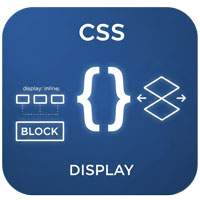

display（ディスプレイ）プロパティ

- プロンプト例
CSSのdesiplayについて解説して
CSSの display とは？
要素が「どのように並ぶか」「幅・高さがどう扱われるか」 を決めます。
div { display: block; }
代表的な display の種類
| 値 | 意味 |
|---|---|
| block | ブロック要素 |
| inline | インライン要素 |
| inline-block | インライン＋ブロック |
| none | 非表示 |
| flex | フレックスレイアウト |
| grid | グリッドレイアウト |
① block（ブロック）
display: block;
特徴
- 横幅いっぱいに広がる
- 改行される
- width / height が効く
代表例
<div>, <p>, <h1>, <ul>
【イメージ】
[ ブロック ] [ ブロック ] [ ブロック ]
② inline（インライン）
display: inline;
特徴
- 横に並ぶ
- 幅・高さ指定できない
- 内容の大きさだけ
代表例
<span>, <a>, <strong>
【イメージ】
文字 文字 文字
③ inline-block（超重要）
display: inline-block;
特徴
- 横に並ぶ
- width / height が効く
実務で超頻出！
.button { display: inline-block; width: 150px; height: 50px; }
【イメージ】
[ ] [ ] [ ]
④ none（非表示）
display: none;
特徴
- 完全に消える（存在しない扱い）
- レイアウトからも消える
.modal { display: none; }
⚠ visibility: hidden; との違い
| display:none | visibility:hidden | |
|---|---|---|
| 見える？ | ❌ | ❌ |
| 場所を保持？ | ❌ | ⭕ |
⑤ flex（超重要）
display: flex;
モダンCSSで最重要レイアウト
.container { display: flex; }
特徴
- 横並びが簡単
- 中央揃えが爆速
- レスポンシブに強い
.container { display: flex; justify-content: center; align-items: center; }
📌 現代Web開発のメイン
⑥ grid（高機能）
display: grid;
2次元レイアウト（縦×横）
.container { display: grid; grid-template-columns: 1fr 1fr 1fr; }
【イメージ】
[ ][ ][ ] [ ][ ][ ]
display まとめ（超重要）
| レイアウト目的 | 推奨 |
|---|---|
| 縦並び | block |
| 横並び | flex |
| ボタン | inline-block |
| 非表示 | none |
| 表組 | grid |
実務でよく使う display パターン
横並び中央寄せ（最頻出）
.parent { display: flex; justify-content: center; align-items: center; }
横並び均等配置
.parent { display: flex; justify-content: space-between; }
カードレイアウト
.container { display: grid; grid-template-columns: repeat(3, 1fr); gap: 20px; }
displayで詰まりやすいポイント
- ❌ inline に width が効かない
span { width: 100px; /* 効かない */ }
→ inline-block にする
span { display: inline-block; width: 100px; }
インラインレベル要素
- 主にブロックレベル要素の中で使用される要素
- リンク（a要素）、画像（img要素）など
- 汎用要素：特別な意味を持たない（span要素）
- インライン要素の幅は、そのタグ付けされた要素のみで、前後で改行されません
- ソースコード上の空白文字類は、ブラウザでは１つ分の空白文字列に置き換えられて表示される（改行を削除するとこの隙間はなくなります）
- 高さや上下マージンなどの指定ができない